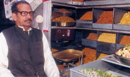

1947 – Founder
As India stepped into a new era of freedom in 1947, a young and determined Shri Ram Durga Prasad Gupta laid the foundation of what would become a culinary institution. Carrying a humble "Khumcha" (traditional basket) on his head, he navigated the narrow, bustling streets of Wadi, Vadodara, sharing more than just snacks—he shared a passion for quality.
What started as a one-man journey through the heart of the city has today evolved into a legendary landmark. The name "Shri Ram Tamtamwala" is now synonymous with the authentic flavor of Vadodara, representing over 75 years of unwavering dedication to taste.
"Taste is the only memory that never fades."
In an era where snacks were predictable, our founder dared to be bold. Through countless experiments with handpicked spices and traditional firing techniques, he invented the unique "Tamtam"—a spicy, crunchy mix that offered an explosion of flavor unlike anything seen before. This secret blend, guarded for three generations, remains the heart of our collection today.
Founder Shri Ram Gupta begins selling handmade snacks in a basket through the streets of Wadi, Vadodara.
The business expands to a permanent "Lari" (cart), becoming a local favorite for evening gatherings.
The first permanent outlet opens in Chowkhandi, establishing the brand as a city institution.
Managed by the third generation, serving thousands of families across the globe while maintaining the original 1947 taste.